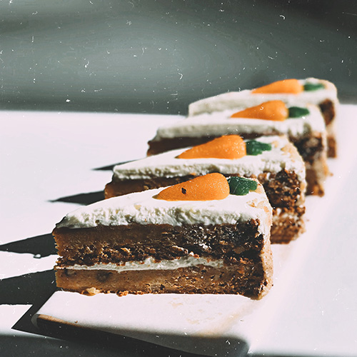

Bekijk recept
Carrot cake
De "Carrot Cake," oftewel worteltaart, is een geliefd dessert dat zich onderscheidt door zijn vochtige textuur en verrukkelijke smaak. Deze cake wordt bereid met geraspte wortels, die een natuurlijke zoetheid en een zachte consistentie aan het gebak geven. De toevoeging van specerijen zoals kaneel en nootmuskaat versterkt de diepte van de smaak.